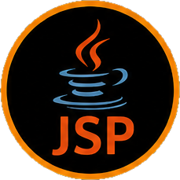
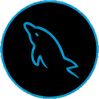

CSD 460 - Capstone in Software Development
Aug – Oct 2026 Final course · Team project
Course Repository
The final capstone course employing all previously developed skills in a real-world, team-based Java project. The course builds the Moffat Bay Lodge & Marina booking system using separate development environments to promote software through development, QA, and production.
Topics Covered
- Client and server-side development with Jakarta EE
- Database development and integration
- Agile/Scrum team-based development
- Requirements gathering and prototyping
- QA testing and peer review
- Multi-environment deployment (Dev, QA, Production)
Blue Team Repository
The shared team repository for the Moffat Bay Marina capstone project. Contains the collaborative codebase, scrum documents, and the full marina website built as a team.
View on GitHub →Live Demo: Moffat Bay Lodge & Marina (Azure)
The deployed capstone site, hosted on Azure App Service with Azure Database for MySQL. The first visit after the site has been idle can take up to a minute to load.